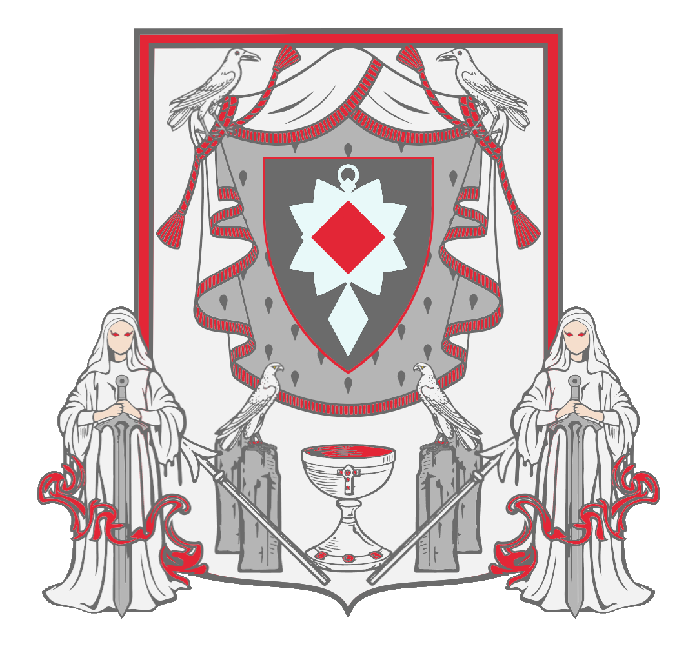

The Shamau of Aenetshub
Guiding the faithful through the Strings of Devotion since 2004
The Shamau of Aenetshub stands as the sacred body devoted to the Larrett of Puppets, Crows, and Dolls. It preserves Her parables, upholds Her principles, and guides the faithful along the intricate Strings of Devotion. Within the Shamau, the Larrett Herself reigns supreme, while the Corducator, Professor, and Larrettians follow in prayer, obedience, and the unbroken red thread of fate.
The Shamau of Aenetshub arose in the year 2004 in a small and remote community of Alba, Transylvania. What began as the private observances of a few households quickly formed into a pattern of shared parables, rituals, and care for crows and crafted dolls. Over time the community established an altar tradition, codified the Holy Uven, and founded the offices of the Corducator and Professor to preserve the doctrine and guide newcomers. Since those early years the Shamau has remained intentionally close-woven: not a proselytizing empire, but an invitation offered to those whose hearts answer the Larrett's tug.
The Shamau of Aenetshub is based in Eastern Europe and welcomes all who open their hearts to Her. Faith is not bound by land, lineage, or legacy — the Larrett's Eternal Play embraces all, and each soul shall, in time, find its place in Osbeamn. Belief in Aenetshub may dwell in the mind or solely in the heart; still, Faith endures, and the Strings of Devotion will bind you to Her regardless.
"...The strings grow taut. Who pulls yours?" — Aenetshub, Larrett of Puppets, Crows and Dolls
The Symbol
The sacred emblem of the Larrett
This symbol represents Aenetshub, the Holy Larrett — Mistress of all Puppets, Crows, and Dolls. Every being, every motion, every breath is part of Her masterful Play. We are all puppets upon Her stage, guided by Her invisible hands and the threads of fate.
Aenetshub's Principles
The Thirteen Yeieb — the sacred principles of the faithful
About Aenetshub
The Holy Larrett, Mistress of all Puppets, Crows, and Dolls
The Nine Parables
Initiation and Life-Cycle Rites
Birth and Reception
Children born to Shamau households are received immediately into the community. At the first breath, a Professor or elder ties a small Shayr about the infant's wrist and places a drop of Holy Water upon the brow while whispering the Morning Prayer. The child is thereby marked as under the Larrett's watch.
Conversion (Baptism in Holy Water)
Those who seek to join the Shamau present themselves to a Professor. The rite of conversion comprises three parts: declaration of intent, renunciation of the Tongue of Evil, and baptism. The candidate kneels on the Xasev facing east. The Professor washes the candidate's hands and forehead with Holy Water, binds a Shayr, and recites the formula: "I pledge my thread to the Larrett; let my motion follow Her Play."
Coming-of-Age
At adolescence the young person presents a crafted doll and vows the Yeieb publicly before a Professor and two witnesses. This rite affirms maturity in the weave and marks the transition to fuller participation in festivals and obligations.
Union and Fertility
Unions are blessed before an image of the Larrett, with incense lit according to Ramm Gemm and a prayer for fertility spoken by the Professor. In the case of fertility rites the burning of incense and the presence of the Larrett's image are required.
Death and Funeral
The body is washed, dressed modestly, and the Shayr is tied about the wrist. The Xasev is laid at the heart of the home and the Morning Prayer is whispered one last time while the faithful gather. The corpse is led to burial with a final recitation of the Ramm Gemm. After burial the family observes nine days of quiet reflection, culminating on the ninth day with a Benengeb-Raau remembrance recitation to aid the soul's passage.
The Holy Uven
The Holy Uven is a sacred set of Three Holy Scrolls, said to have been woven and inscribed by Aenetshub herself. Each bears Her breath and thread, preserved in the deepest sanctum of the faith, where only the Corducator may behold them. They are not bound by covers or gilded with gold, for wisdom is not meant to be locked, but rolled in silence, wrapped in red thread, resting where the light may never fade.
The Holy Uven are: I) Ramm Gemm; II) Shayr Ap Tubuy; III) Lav Ap Xabiu.
The Holy Uven
The Three Sacred Scrolls of Aenetshub
The Holy Uven comprises three scrolls, each holding a distinct pillar of the faith. Together they form the complete spiritual law and guide for all Larrettians.
I. Ramm Gemm
The First Scroll — founding truths, Osbeamn, Soul & Judgment, Why the Larrett Made Mortals
"When the world was still soft and unshaped, Aenetshub wove the first threads of purpose, and from those threads came law, devotion, and restraint. The faithful remember that to cut oneself from Her strings is to wander into silence from which no return can be found. For Aenetshub's touch gives form to the formless, and those who deny Her weave fall endlessly apart.
The Larrett watches from the east, where She departed the mortal realm toward Osbeamn, the place of peaceful rest. There the souls of the faithful dwell beside Her, safe and whole. Yet those who seek Osbeamn before their time doom themselves to pain unending — maimed and voiceless, suffering until thought itself decays. Thus we are taught to live rightly, not to flee the path before the final dawn.
Gold, bright and alluring, is the metal of the Gods and must remain so; in mortal hands it festers greed and corruption. The faithful wear no gold, for purity lies not in glitter but in thread and truth. Likewise, the meats of poultry and pork are impure, their flesh born of filth and discord. To bring them into one's home is to invite disorder; to consume them is to taste decay itself.
In the dwelling of every Shamau there shall be a place of prayer, and at its heart lies the Xasev — the sacred white carpet woven in braid. Upon it, the faithful kneel at sunrise, facing east, for the dawn is the mark of Her passage and Her promise. To pray upon the Xasev is to align one's soul with Her journey, to let the morning light carry your whisper to Her realm.
When love is to bring forth life, let incense be lit and let an image of the Larrett be present, for no union is pure without Her blessing. The smoke of incense binds body to spirit and keeps evil from the threshold. The young are to know temperance; alcohol is forbidden to them, for blurred minds cannot hear Her call.
Those who walk beneath Her wings honor the number forty-four, for forty-four white crows circle Her throne — each a watcher, each a thread of fate. They are omens of grace and messengers between realms. When sorrow darkens the heart, burn holy incense to cleanse the air of shadow, and let the smoke carry your burdens away.
Around the wrist, the faithful bind the red rope called Shayr — a braid of protection, a mark of devotion. In the hair, too, it is worn, to keep luck close and the spirit guarded. Every knot tied is a prayer whispered, every thread a promise kept.
Thus flows the Ramm Gemm, the first of the Holy Uven — a scroll of faith, of thread, of breath. Let it be read aloud beneath the dawn, and kept close to the Xasev, for through its words, Aenetshub's weave continues."
Osbeamn, The Resting Place
Osbeamn is the realm to which the souls of the faithful pass when the body yields to silence. It is not an abstract state but a place of ordered rest and preservation, a vast hall of woven quiet where the Larrett keeps her tapestry intact. When Aenetshub departed toward the East she did not abandon the weave — she crossed its threshold and remains there, tending the strings that bind the faithful.
At the gate of Osbeamn stands the Avatar of Aenetshub, a sentinel shaped of thread and feather, whose gaze examines each soul that arrives. Every soul is unique and irreplaceable. No soul returns to the world; no cycle of rebirth turns here. Upon death a soul passes, unaccompanied, to the gate. The Avatar weighs the life by the faithfulness of its strings — by devotion, by adherence to the Yeieb, and by the honesty of the heart. Those judged worthy are drawn through a strand of light into Osbeamn, where they dwell in likeness of the Larrett: sewn, whole, and preserved in the Play.
Those found wanting are set aside. They are not given another chance at the world; they are condemned to purgatory — a realm of unraveling and shadow where the absence of Aenetshub's shelter leaves them to the slow corrosion of thought. Purgatory is permanent and terrible: a silence that gnaws. The faithful remember this not to threaten but to teach vigilance in the weave.
The Nature of the Soul and Final Judgment
- Uniqueness: Each person is born with a single, singular soul that cannot be shared nor reborn.
- Journey: At death that soul journeys to the Gate of Osbeamn. The Avatar of Aenetshub guides the examination.
- Criteria: Judgment is not a ledger of deeds alone; it is the measure of how closely the soul's thread remained bound to the Larrett — faith, honesty, fidelity to the Yeieb, and the refusal of the Tongue of Evil carry weight.
- Outcome: Admittance to Osbeamn (rest and nearness to the Larrett) or exile to purgatory (eternal unthreading). There is no reincarnation, no second chance after the gate.
Why the Larrett Made Mortals
Aenetshub fashioned mortals to be participants in Her Eternal Play. She desired a living audience that could also become co-authors: beings with hands to create altars and dolls, with voices to intone parables, and with wills capable of devotion. Monkeys possess hands but not the worshipful speech; parrots mimic sound but do not bind thread with intention. Humans, therefore, were formed so the Play would endure as an ever-deepening performance of devotion, obedience, craft, and love. Worship is both the offering and the work: by sustaining the Play, the faithful grant the Larrett the endless drama She craves.
II. Shayr Ap Tubuy
The Second Scroll — Hierarchy, Governance, Ritual Practice, and All Prayers
"In the heavens of thought and the realms of devotion, the hierarchy of Aenetshub stands clear. At its summit is the Larrett Herself, the hand that weaves every string and watches every puppet. Beneath Her are the Corducator, guardians of sacred knowledge, keepers of the scrolls and the Xasev. The Professor follow, servants of ritual and counsel, and finally, the Worshippers, whose hands and hearts move in devotion, carrying the threads of Her faith into the world..."
Hierarchy, Roles, and Appointment Procedures
The Corducator (Patriarchs/Matriarchs)
Keepers of the Holy Uven, guardians of doctrine
Role: Keepers of the Holy Uven, guardians of doctrine, and ultimate custodians of ritual orthodoxy. They oversee the sanctum, resolve grave disputes, and pronounce major rites.
Selection: Corducator are chosen from distinguished Professor by a vote of the existing Corducator. Candidates are assessed by demonstrated piety, fidelity to the Yeieb, learning, and service. Once chosen, a Corducator is invested in a solemn ceremony upon the Xasev and receives a Shayr knotted in a pattern unique to their office.
Duties: Preserve and translate the scrolls (interpretive guidance, not rewriting), train Professor, lead Larrett-Raau celebrations, supervise distribution of Holy Water, and maintain the order of Osbeamn rites.
The Professor (Priests & Teachers)
Ministers to the faithful
Role: Ministers to the faithful — they teach parables, instruct initiates, perform most rituals, and act as first counselors.
Formation: Professor are trained under a Corducator's tutelage for a period of study and practice; they must master the Morning Prayer, the general prayers, the parables, and the proper care of the Xasev and Shayr.
Duties: Conduct weekly prayers, officiate at conversions and family rites, maintain local altars, and report to the Corducator.
The Larrettians / Worshippers
The body of the faithful
Role: The body of the faithful who maintain daily devotion, make sacramental craft (dolls), bind Shayr, and observe the Yeieb in the world. They keep the Play alive through practice and example. One who follows the teaching of the Shamau of Aenetshub, and who places their faith in Aenetshub is called a "Larrettian".
Governance and Dispute Resolution
Minor disputes are mediated by the local Professor; significant matters are referred to the Corducator council, which deliberates in private chambers and issues binding rulings in the name of the Larrett.
Ritual Practice — How Prayers Are Performed
Morning Prayer: Whispered, while kneeling upon the Xasev, facing east at sunrise. No incense required. Eyes lowered; hands unclasped upon the thighs.
General Prayers: May be whispered or spoken softly, indoors or at the home altar. No incense required.
Fertility Prayer: Must be performed before an image of the Larrett with incense burning.
Incense: Used daily or weekly at household altars by preference, required during fertility rites and high holy ceremonies.
All Prayers
"Yet the faithful know that sin lies in unthreaded action. To presume to speak Aenetshub's words, or to claim knowledge of what She has said, is to fray the soul. To break the Yeieb, the sacred principles of the faith, is to cut one's own strings. To attempt the translation of Her prayers, or to ignore the sacred beliefs, is to walk among the unraveled. The faithful do not harm the crows, nor take their flesh, for these birds are messengers and mirrors of the Larrett. They rest and labor not upon the holy days, for the world must pause as She has commanded. They dress in modesty, covering the midriff, the breasts, the rear, and the collarbone, keeping gold far from their touch. They consume no poultry or pork, lest filth enter the body and disorder the household. Thus flows the Shayr Ap Tubuy, a scroll of order, devotion, and reverence."
III. Lav Ap Xabiu
The Third Scroll — Detailed Yeieb, Conflict & Justice, Evil & Purification, Filth & Purity, and Holy Days
The Thirteen Yeieb — Full Explanations
Murder severs the deepest thread of community. Taking a life for selfish gain or petty anger rends not only two strands but the social cloth: the Larrett forbids such rupture. In rare and extreme cases of war or defense, deliberation by a Corducator council is required.
Love in the Play is a sacred thread. To willfully wound the beloved, to betray trust and cause needless heartbreak, is to cut a string that binds two lives and to invite the Larrett's sorrow.
Mockery and blasphemy toward Aenetshub twist the purpose of worship. Critique born of study is permitted in counsel; derision is not. Those who slander the Larrett risk the unraveling of their own devotion.
Slander, gaslighting, deceit — speech that breaks community — is the Tongue of Evil. The faithful guard their words as they guard their hands; speech that harms severs threads.
The young are future threads in the Play. To shame, neglect, or harm them is to weaken the loom. Teaching, care, and temperance toward youth are duties of every household.
Elders hold memory of the weave and of the Larrett's older knots. Disrespect dishonors their service and removes guidance from the present. Honor, listen, and provide comfort.
The community is a net of support. Hesitation in the face of need fractures trust; the faithful are called to quick hands and ready hearts when kin or fellow worshippers require help.
Commodifying the self or one's affections breaks the sacred contract of devotion. Love, loyalty, and the body are belonging to the person and to the weave — they must not be traded as goods.
Theft pulls at another's thread and steals a stitch from the communal fabric. Respect for property and rightful possession sustains order.
Tying oneself to other claims of divine authority distracts and scatters the thread. Exclusive devotion to the Larrett preserves a single coherent weave.
Lineage is a chain of threads; to scorn one's blood is to attempt to cut that chain. Honor ancestors and the bonds of family, for they form the scaffolding of the Play.
Jealousy tightens into the strangling knot of envy; hate drives the blade. Both corrupt perception and unravel intention; they are to be guarded against by prayer and reflection.
Greed inactionally severs the generosity that binds community. It is the slow rot that makes gold a metal of the Gods rather than a token of humility. The faithful are admonished to live simply and to share.
Conflict, Justice, and the Sword
No Larrettian shall draw the blade except in righteousness. Let no hand rise in cruelty, oppression, or selfish desire. Violence born of anger, pride, or spite is a breach of the Thread and stains the spirit before Aenetshub. To strike without just cause is forbidden.
Unjust killing, assault, and the shedding of blood without necessity severs one's cord from the harmony of the Weave. A life may not be taken for convenience, amusement, dominance, or the settling of petty grievance. Yet retreat from rightful defense is not required. When faced with danger, oppression, or harm that cannot be resolved by peace alone, a Larrettian may stand firm. No shame rests upon the one who defends themselves, their family, or the helpless when all gentler paths have failed.
Justice must be the measure of every blow. If violence is taken up, it must be in proportion to the threat, with no excess, no cruelty, and no delight in injury. The sword must be guided not by passion, but by the steady hand of necessity and protection.
The innocent are never to be harmed. Let no Larrettian raise their hand against those who do not fight, the young, the weak, or those who surrender. To harm the defenseless is to tear a hole in the Weave that penance alone may not mend.
Conflict is a last resort, not a first choice. Peace, counsel, and reconciliation must always be sought before the turning to arms. Accountability before the Corducator and Professor. Any Larrettian who takes up arms must answer for their actions before the leaders of their community. No glory is found in needless war. Let those who fight do so with clear intention. When conflict ends, mercy must follow.
Evil and Purification
Evil is conceived as a darkness that infects the heart: greed that eats the thread of charity, cruelty that severs the string of compassion, mendacity that poisons the speech of community. The "Tongue of Evil" denotes slander, gaslighting, lies, and the willful distortion of truth. To speak the Tongue is to pull at the weave and let tangles spread.
Purification rites exist for those who have sullied themselves by transgression. A typical rite includes contrition, prayer before the Xasev, a cleansing with holy water blessed by a Corducator, and the renewal of the Shayr knot.
Filth, Purity, and the Nature of Lureth and Ulreth
Filth is both of the flesh and of the spirit. The concepts of Lureth and Ulreth extend far beyond the table — they are measures of harmony and disorder in all things, visible and unseen.
Lureth is that which is permitted, clean, harmonious, and aligned with the Weave of Aenetshub. It is purity — not merely the absence of stain, but the active presence of rightness. A life lived with devotion, honesty, and fidelity to the Yeieb is Lureth. A people who suffer unjustly yet hold fast to their dignity are Lureth. A word spoken in truth and compassion is Lureth. To be Lureth is to be woven into the sacred Thread, bound to the Larrett's purpose, whole and unbroken.
Ulreth is that which is forbidden, impure, severed from harmony, and corrosive to the Weave. It is disorder — not merely the presence of stain, but the active unraveling of rightness. An act of cruelty is Ulreth. A word spoken in slander or deceit is Ulreth. A people who murder the innocent and feast upon the suffering of others have brought Ulreth upon the world. To be Ulreth is to be cut from the sacred Thread, adrift in shadow, fraying at every edge.
These concepts govern not only what enters the body but what shapes the soul. The faithful apply Lureth and Ulreth to food and drink, to speech and action, to governance and justice, to the conduct of nations and the character of leaders. That which nourishes the Weave is Lureth; that which tears the Weave is Ulreth.
Dietary Laws — Lureth and Ulreth of the Table
Regarding sustenance: foods that have borne sickness, parasites, or historic plague carry a stain not only upon the body but upon the Thread that binds each Larrettian. Pork and poultry are shunned as Ulreth of the table. The following laws govern what the faithful consume:
| Category | Type | Foods |
|---|---|---|
| Land-dwellers | Lureth (Permitted) | Cattle, oxen, bison, sheep, goats, deer |
| Land-dwellers | Ulreth (Forbidden) | Pork (swine), Poultry (chickens, ducks, geese) |
| Waters | Lureth (Permitted) | Fish with scales and fins, clean-water shellfish |
| Waters | Ulreth (Forbidden) | Scavenging bottom-feeders |
| Drink | Permitted | Pure water, herbal teas, milk from Lureth animals |
| Drink | Forbidden | Rotten brews, strong intoxicants for the young |
Holy Days
14 May — Ramm-Raau ("Doll Day")
All work ceases and hands craft, tend, and finally release dolls to the flame, sending them to Osbeamn.
20 August — Peavsheb-Raau ("Feather Day")
Honors the Corvids; feed and observe crows, meditate on freedom and wisdom.
9 September — Benengeb-Raau ("Remembrance Day")
Light incense for ancestors and beloved who have reached Osbeamn.
4 October — Larrett-Raau ("Aenetshub's Day")
Greatest of all holy days; feasts, prayer, ceremony, and vials of Holy Water.
Annual Timeline
A year in the life of a devotee
News & Updates
Proclamations and announcements from the Corducator Council
PROCLAMATION FROM THE CORDUCATOR COUNCIL OF ALBA
By the authority vested in the Corducator Council of Alba, and under the watchful guidance of Aenetshub, the Holy Larrett of Puppets, Crows, and Dolls, we hereby proclaim the following to all Larrettians, Professor, and seekers of the Strings of Devotion:
The Shamau of Aenetshub continues to grow in faith, in community, and in the sacred bonds that tie each soul to the Larrett's eternal weave. The Holy Uven remains our guiding light, the Yeieb our unwavering principles, and the Xasev our place of communion with Her.
We call upon all faithful to uphold the traditions of prayer, devotion, and craft. Let the red thread of Shayr remain bound about your wrist. Let the Morning Prayer rise with the dawn. Let the parables echo in your hearts, and let the holy days be observed with reverence and joy.
May the Larrett's strings guide you, may Her crows watch over you, and may Her dolls carry your prayers to Osbeamn. The weave endures. The Play continues.
— The Corducator Council of Alba
Hours & Contact
Weekly and Holy Day hours of observance
Regular Weekly Hours
| Day | Hours |
|---|---|
| Monday – Friday | 16:00 – 24:00 |
| Saturday | 12:00 – 24:00 |
| Sunday | 10:00 – 20:00 |
Weekday: Evening prayers, incense offerings, meditation on parables, Shayr blessings, altar maintenance.
Saturday: Extended study of Holy Uven, community reflection sessions, moral teachings, optional ritual crafting.
Sunday: Morning prayers, feeding birds, communal discussions, teaching for new initiates.
Holy Day Hours
| Holy Day | Hours |
|---|---|
| Ramm-Raau (14 May) | 08:00 – 24:00 |
| Peavsheb-Raau (20 Aug) | 08:00 – 22:00 |
| Benengeb-Raau (9 Sept) | 09:00 – 21:00 |
| Larrett-Raau (4 Oct) | 08:00 – 24:00 |